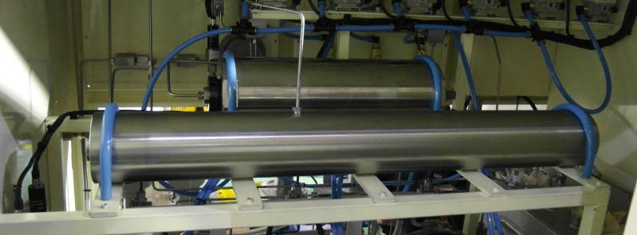
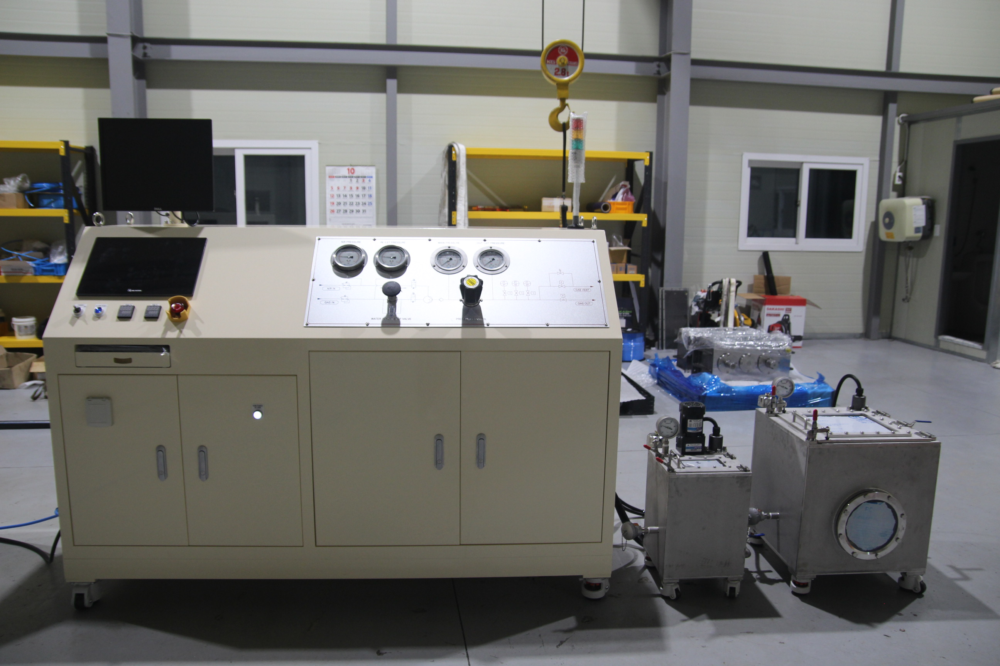
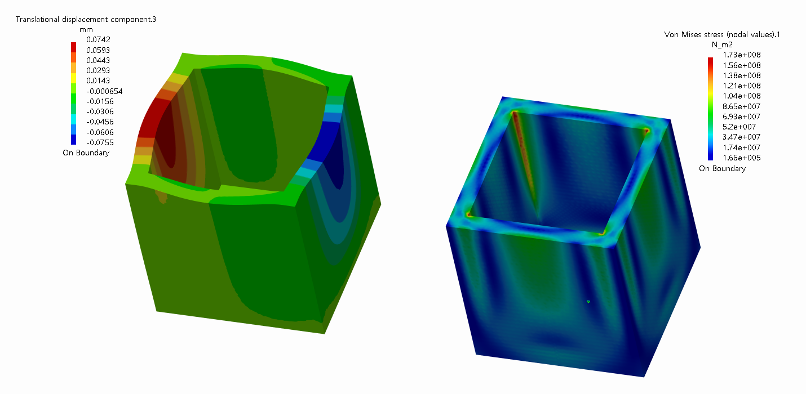

BUFFER TANK
High- and Low-Pressure Buffer Tanks
Temporarily stores the medium to stabilize supply.
View EquipmentTESFAC / PRESSURE SYSTEMS
Explore TESFAC systems for proof, burst and leak testing, high-pressure storage and manual pressurization.
Explore Equipment
TESFAC specializes in high-pressure equipment design and manufacturing, drawing on extensive engineering and research experience.
We review applicable Korean and international standards, including KB ISO, KGS, EN and ASME, to manufacture pressure equipment to specification. We calculate required wall thicknesses and analyze metal structures in-house.
We have built small pressure vessels and test equipment in the 1–200 MPa range, gaining experience with performance testing systems for high-pressure products. We also operate in-house test systems.
We apply our field experience to help Korean industry advance high-pressure technology and improve safety.
PRODUCTS
We manufacture and supply high-pressure buffer tanks and safety chambers, using design calculations and structural analysis based on applicable Korean and international standards.
We focus on automated systems for safe, remote high-pressure testing. We also supply manual pressurization equipment with automatic measurement systems to make pressure testing easier to get started with.
For small products that need proof, leak or burst testing, TESFAC offers contract pressure testing.
EQUIPMENT

BUFFER TANK
Temporarily stores the medium to stabilize supply.
View Equipment
MANUAL PRESSURIZATION
An operator uses a hand pump to pressurize the test circuit.
View Equipment
PROOF TEST
Checks specimen integrity at a specified test pressure.
View Equipment
LEAK TEST
Checks for leakage under specified test conditions.
View Equipment
BURST TEST
Records the pressure and failure pattern when a specimen ruptures.
View Equipment
STRUCTURAL ANALYSIS
Reviews loads and protective enclosures for the test conditions.
View EquipmentRequest proof, leak or burst testing for small valves, fittings and vessels. Accredited test reports can also be issued through organizations such as TÜV and SGS.
CONTACT
Please email the equipment name, test specimen, target pressure and any relevant details.